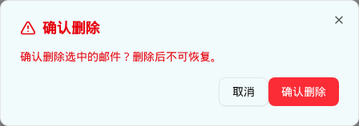

| 所属组件 | 2.3 日志表格 → 批量操作「删除」 |
| 主文件 | index.html#component-2-3 |
| 触发路径 | 层级2（选中含可删状态）→ 点击红色「删除」按钮 |
确认删除选中的邮件？删除后不可恢复。

| 元素 | 文案 | 说明 |
|---|---|---|
| 标题 | ⚠ 确认删除（红 + AlertTriangle） | text-red-600 |
| 描述 | 确认删除选中的邮件？删除后不可恢复。 | text-red-600 font-medium |
| Footer | 取消 / 确认删除（红填充） | — |
⚠ demo 缺陷：handleBatchDelete 只执行 console.log("[v0] Batch delete:", ids)，不改变任何邮件状态——点击「确认删除」后列表毫无变化。可删状态集合（quarantined/pending_review/delivered/delivery_failed/recall_failed）只用于按钮启用判断。
本规格的可交互预览按 PRD 语义实现（确认后行状态变为「已删除」红色徽标）。
| 比对项 | demo 实际 DOM | 提取的 HTML | 是否一致 |
|---|---|---|---|
| 根节点 | div[data-slot=dialog-content].sm:max-w-md | 同 | 一致 |
| 后代节点数 | 16（比放行弹窗少 5：无改判 Select 与说明） | 16 | 一致 |
| 改判下拉 | 不存在 | 不包含 | 一致 |
| 描述配色 | text-red-600 font-medium | 同 | 一致 |